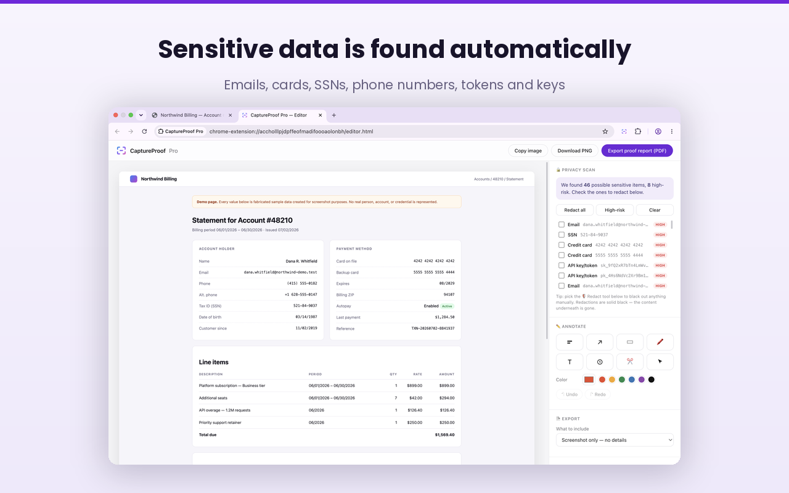
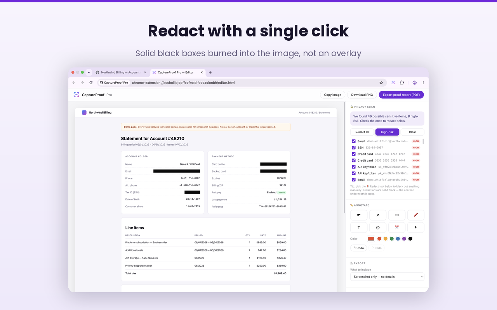
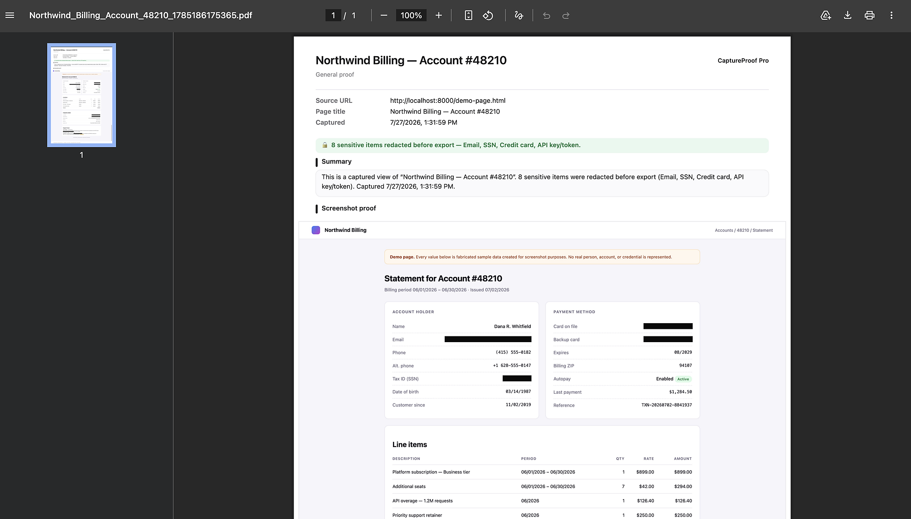

Capture any web page, automatically find the sensitive information on it, black it out in one click, and export a client-ready proof report.

Local-first processing enabled
The full page, scrolled and stitched automatically. Or the visible area, or a region you drag.
Emails, phone numbers, card numbers, tax IDs, keys and tokens — found and rated, highest risk first.
All at once, high-risk only, or item by item. Solid black painted into the image itself.
A plain PNG, or a PDF proof carrying the source URL, page title and capture time.
Every capture is scanned for the formats that most often cause a leak. Each hit is rated, and the high-risk ones sort to the top so you can triage at a glance.
Black boxes are painted into the image itself, not layered over it. The pixels underneath are gone — there is nothing for a recipient to peel back.
Each proof records the source URL, the page title, the capture time, and a summary of exactly what was redacted.
Arrows, boxes, highlights, numbered steps, text and crop — then export as PNG or PDF, with templates for client updates, support tickets and bug reports.
See it in action
